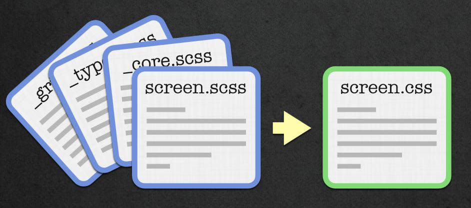

Sass
Syntactically Awesome Stylesheets


Warum?

CSS
-
Variablen -
Mathematik -
Import - Vendor-Prefixes (-webkit, -moz (-o))
Sass
kompiliert Scss → CSS - baut auf CSS Syntax auf
- erweitert diese
-
Gültige* CSS-Dateien sind auch gültige Scss-Dateien
Außer einige wenige obskure (IE)-CSS-Hacks
Features
Nesting
Scss
article {
margin: 10px;
p {
text-align: justify;
a.special {
color: #855;
}
}
}
Css
article {
margin: 10px;
}
article p {
text-align: justify;
}
article p a.special {
color: #855;
}
https://speakerdeck.com/jonrohan/githubs-css-performance
Nesting ‐ Advanced '&'
Scss
a.btn {
color: #555;
&:hover, &:active {
text-decoration: underline;
}
&.btn-primary {
color: red;
}
}
Css
a.btn {
color: #555;
}
a.btn:hover, a.btn:active {
text-decoration: underline;
}
a.btn.btn-primary {
color: red;
}
Kontext!
z.B. für modernizr<html class="js no-touch postmessage history multiplebgs boxshadow opacity cssanimations csscolumns cssgradients csstransforms csstransitions .......">
Scss
.fancy {
background-image: linear-gradient(top center, #555, #888);
.no-cssgradients & {
background-color: #555;
}
}
Css
.fancy {
background-image: linear-gradient(top center, #555555, #888888);
}
.no-cssgradients .fancy {
background-color: #555;
}
Variablen
Scss
$primary-color: #ff0000;
// oder $primary-color: red;
h2 {
color: $primary-color;
}
h1 {
color: invert($primary-color);
}
Css
h2 {
color: red;
}
h1 {
color: cyan;
}
Abstände
Scss
$width: 800px;
$margin: 20px;
$real-width: $width - 2 * $margin;
.container {
width: $real-width;
margin: $margin;
.half {
width: $real-width / 2;
}
}
Css
.container {
width: 760px;
margin: 20px;
}
.container .half {
width: 380px;
}
Funktionen
Scss
$main: #666;
$darker: darken($main, 10%);
$lighter: lighten($main, 10%);
h1 { color: $main; }
h2 { color: $darker; }
h3 { color: $lighter; }
Css
h1 {
color: #666666;
}
h2 {
color: #4d4d4d;
}
h3 {
color: gray;
}
Mixins
Scss
@mixin border-radius( $amount) {
border-radius: $amount ;
-webkit-border-radius: $amount ;
-moz-border-radius: $amount ;
}
article {
@include border-radius(5px)
}
Css
article {
border-radius: 5px;
-webkit-border-radius: 5px;
-moz-border-radius: 5px;
}
Scss
@mixin vendor-prefix($name, $argument) {
#{$name}: $argument;
-webkit-#{$name}: $argument;
-ms-#{$name}: $argument;
-moz-#{$name}: $argument;
-o-#{$name}: $argument;
}
p {
@include vendor-prefix(hyphens, auto);
@include vendor-prefix(border-radius, 5px);
}
Css
p {
hyphens: auto;
-webkit-hyphens: auto;
-ms-hyphens: auto;
-moz-hyphens: auto;
-o-hyphens: auto;
border-radius: 5px;
-webkit-border-radius: 5px;
-ms-border-radius: 5px;
-moz-border-radius: 5px;
-o-border-radius: 5px;
}
Schleifen
Scss
@for $i from 1 through 12 {
.tile#{$i} {
width: $i * 77px;
height: $i * 77px;
}
}
Css
.tile1 { width: 77px; height: 77px; }
.tile2 { width: 154px; height: 154px; }
.tile3 { width: 231px; height: 231px; }
.tile4 { width: 308px; height: 308px; }
.tile5 { width: 385px; height: 385px; }
.tile6 { width: 462px; height: 462px; }
.tile7 { width: 539px; height: 539px; }
.tile8 { width: 616px; height: 616px; }
.tile9 { width: 693px; height: 693px; }
.tile10 { width: 770px; height: 770px; }
.tile11 { width: 847px; height: 847px; }
.tile12 { width: 924px; height: 924px; }
Scss
@mixin hyphens($value: "manual") {
@each $prefix in -webkit-, -moz-, -o-, "" {
#{$prefix}hyphens: $value;
}
}
p {
text-align: justify;
@include hyphens(auto);
}
Css
p {
text-align: justify;
-webkit-hyphens: auto;
-moz-hyphens: auto;
-o-hyphens: auto;
hyphens: auto;
}
Bedingungen
Scss
@mixin button($color) {
background: $color;
@if lightness($color) > 50 {
color: black;
} @else {
color: white;
}
}
a.button-dark { @include button(#444) }
a.button-light { @include button(#999) }
Css
a.button-dark {
background: #444444;
color: white;
}
a.button-light {
background: #999999;
color: black;
}
Import
@import "core";
@import "typography" , "grid";
@import "styles/*";
@import "**/*;"
Nested import
@media screen and (min-width: 320px) {
@import "phone";
}
body.admin {
@import "admin";
}
Scss
@media screen and (min-width: 320px) {
// inhalt von phone.css
.sidebar { display: none; }
}
body.admin {
// user.css
a.logout { color: blue; }
}
Css
@media screen and (min-width: 320px) {
.sidebar {
display: none;
}
}
body.admin a.logout {
color: blue;
}
Installation
1. Kommandozeile mittels Ruby
$ gem install sass
$ sass --watch screen.scss
>>> Sass is watching for changes. Press Ctrl-C to stop
>>> Change detected to: ./screen.scss
overwrite ./screen.css
2. Apps
-
ScoutApp (Win, Mac, free)
Compass, Sass
-
CodeKit (Mac, $25)
Less, Sass, Stylus, Jade, Haml, Slim, CoffeeScript, Javascript and Compass
-
Fire.app (Win, Mac, Linux $14)
CoffeeScript, Sass, Compass, Haml, Slim, Markdown
-
Compass.app (Mac $10)
Compass, Sass, Webserver, Livereload
-
LiveReload (Mac $9.99, Win alpha)
LESS, SASS, Compass, Stylus, CoffeeScript, IcedCoffeeScript, Eco, SLIM, HAML, Jade
3. Integration in Build-Tools
- Rails (default seit 3.1)
- Node.js/Express.js
- Module für gängige Frameworks Drupal Wordpress Typo3
- Middleman, Yeoman
- Compass mit jedem anderen Projekt
sass-convert
http://css2sass.heroku.com/.highlight { background: #2B2B2B}
.highlight .hll { background-color: #ffffcc }
.highlight .c { color: #BC9458}
↓
.highlight {
background: #2B2B2B;
.hll {
background-color: #ffffcc;
}
.c {
color: #BC9458;
}
}
Compass
"Standard Library" for Sass- CSS3
- Sprites
- Utilities
Installation
gem install compass
compass create myproject
compass watch
config.rb
http_path = "/"
css_dir = "stylesheets"
sass_dir = "sass"
images_dir = "images"
javascripts_dir = "javascripts"
output_style = :expanded # or :nested or :compact or :compressed
line_comments = false
# Plugins!
require 'ninesixty'
require 'susy'
line_comments = true
/* line 107, stylesheets/_mixins.css.sass */
label {
display: block;
}
CSS3
Scss
@import "compass/css3/transform";
@import "compass/css3/images";
a {
@include transform( scale(1.2) );
@include background-image(linear-gradient(left top, white, #dddddd));
}
Css
a {
-webkit-transform: scale(1.2);
-moz-transform: scale(1.2);
-ms-transform: scale(1.2);
-o-transform: scale(1.2);
transform: scale(1.2);
background-image: -webkit-gradient(linear, 0% 0%, 100% 100%, color-stop(0%, #ffffff), color-stop(100%, #dddddd));
background-image: -webkit-linear-gradient(left top, #ffffff, #dddddd);
background-image: -moz-linear-gradient(left top, #ffffff, #dddddd);
background-image: -o-linear-gradient(left top, #ffffff, #dddddd);
background-image: linear-gradient(left top, #ffffff, #dddddd);
}
Sprites
Weil:
- Ladezeit/Serverload
- Image hover Wechsel ohne Unterbrechung
Scss
@import "compass";
@import "icons/*.png";
@include all-icons-sprites;
Css
.icons-sprite, .icons-glyphicons_000_glass, .icons-glyphicons_001_leaf, .icons-glyphicons_002_dog, .icons-glyphicons_003_user, .icons-glyphicons_004_girl, .icons-glyphicons_005_car, .icons-glyphicons_006_user_add, .icons-glyphicons_007_user_remove, .icons-glyphicons_008_film, .icons-glyphicons_009_magic { background: url('/images/icons-s824d25e81f.png') no-repeat; }
.icons-glyphicons_000_glass { background-position: 0 -74px; }
.icons-glyphicons_001_leaf { background-position: 0 0; }
.icons-glyphicons_002_dog { background-position: 0 -49px; }
.icons-glyphicons_003_user { background-position: 0 -186px; }
.icons-glyphicons_004_girl { background-position: 0 -120px; }
.icons-glyphicons_005_car { background-position: 0 -98px; }
.icons-glyphicons_006_user_add { background-position: 0 -142px; }
.icons-glyphicons_007_user_remove { background-position: 0 -164px; }
.icons-glyphicons_008_film { background-position: 0 -208px; }
.icons-glyphicons_009_magic { background-position: 0 -25px; }
Utilities
- Clearfix
- Inline-List
- Hacks (z.B. min-width)
- Reset
-
CSS-Validator
compass validate .
- Tonnen an Funktionen
Extensions
-
Compass Magick
Gradienten-PNGs automatisch generieren
-
Twitter bootstrap
u.v.m.
960.gs, Grid Coordinates, GraphPaper, Baseline, Less Framework 4, 52 Framework, Twitter Bootstrap, Foundation, Stitch, Susy, Salsa, Blankwork, Adaptive Grid, HTML5 Boilerplate
-
Sassy Buttons
easy CSS3 buttons
github.com/chriseppstein/compass/wiki/Compass-Plugins

Scss vs Sass
Sass:
- kürzere Syntax a la Python, CoffeeScript, HAML
- Geschmacksfrage → gleichmächtig
Scss
article {
margin-bottom: 2em;
.entry-content {
border-top: 1px solid #eee;
@include box-shadow(2px, black)
}
}
Sass
article
margin-bottom: 2em
.entry-content
border-top: 1px solid #eee
+box-shadow(2px, black)
Alternativen
Less, StylusScss
@import "other.css";
$mainColor: #0982c1;
a {
img {
border-color: $mainColor;
}
}
Less
@import "other.css";
@mainColor: #0982c1;
a {
img {
border-color: @mainColor;
}
}
- + leichteres Setup (js direkt im Browser)
-
- IF/Loops schwieriger
- Schleifen NUR mit Rekursion!
- Statt Bedinungen, Guard-Statements
- - kein Compass
- + Twitter-Bootstrap
Meinungen sind wie ...,
Egal welcher Preprocessor
- Wesentlich wartbarere Stylesheets dank Imports, Variablen und Nestings
- Programmatisch statt Copy & Paste
- Seit 2009 nicht mehr ohne
-
ALLE meine Webprojekte verwenden Sass
So auch diese Präsentation
Ressourcen
-
http://sassmeister.com/
Online "Editor"/Compiler
-
http://compass-style.org/
Offizielle Compass Seite
-
http://sass-lang.com/
Offizielle Sass Seite
-
http://thesassway.com/guides
Blogs und Guides
- Getting started with Sass and Compass
-
Sass & Compass: The future of stylesheets now
Sehr gute Präsentation
Libsass und sassc
Rewrite in C
- hcatlin/sassc
- hcatlin/libsass
- It's fast, man!
Danke!
powered by Reveal.js

-
stefanwienert.net
Blog
-
@stefanwienert
Twitter
-
pludoni GmbH
Webentwickler bei pludoni
ITsax.de - IT Jobs in Dresden und Umgebung
ITmitte.de - IT Jobs in Leipzig, Halle, Jena